பட உரிமைகள்
படங்கள், உரிமங்கள் மற்றும் நன்றிகள்
ஒவ்வொரு புகைப்படத்தின் மூலம், படைப்பாளர் மற்றும் உரிமத்தையும் தெளிவாகப் பதிவு செய்கிறோம்.
உரிமை விவரங்கள்
வெளிப்படையான படப் பயன்பாடு
இந்தத் தளத்தில் உள்ள புகைப்படங்கள் Wikimedia Commons-இல் இருந்து பொது உரிமங்களின் கீழ் பதிவிறக்கம் செய்யப்பட்டு, அளவு குறைக்கப்பட்டு WebP ஆக மாற்றப்பட்டுள்ளன.
சமூகம் மற்றும் பண்பாட்டு படங்கள் விளக்கமானவை; திரிஷா பேரவையின் உண்மையான நிகழ்வுகள் அல்ல. படங்களின் பயன்பாடு எந்தவொரு நபரின் ஆதரவையும் குறிக்காது.
| படம் | படைப்பாளர் | உரிமம் | மூலம் |
|---|---|---|---|
|
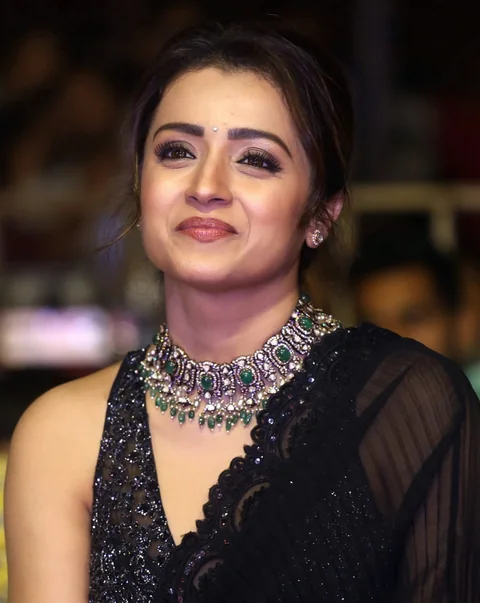 பொன்னியின் செல்வன் விழாவில் திரிஷா portraits |
Verghese TK | CC BY-SA 4.0 | Commons |
|
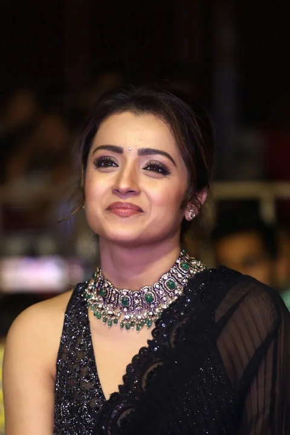 விழா மேடையில் ஒரு தருணம் portraits |
Verghese TK | CC BY-SA 4.0 | Commons |
|
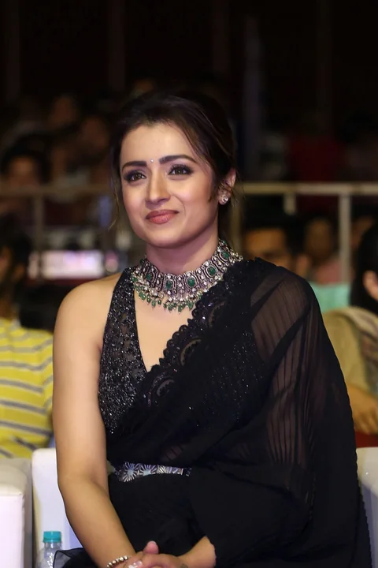 பார்வையாளர்களை நோக்கி புன்னகை portraits |
Verghese TK | CC BY-SA 4.0 | Commons |
|
பொன்னியின் செல்வன் விழா நினைவு
portraits
|
Verghese TK | CC BY-SA 4.0 | Commons |
|
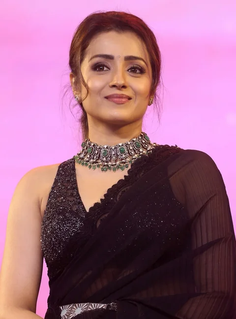 மேடையின் மற்றொரு தருணம் portraits |
Verghese TK | CC BY-SA 4.0 | Commons |
|
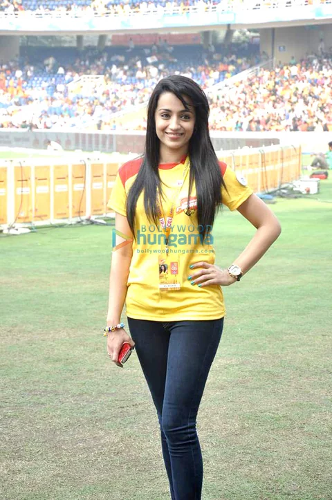 2014 விளையாட்டு விழாவில் screen |
Bollywood Hungama | CC BY 3.0 | Commons |
|
திரையுலக நினைவுகள்
screen
|
Bollywood Hungama | CC BY 3.0 | Commons |
|
சாதனைச் சான்றிதழுடன்
screen
|
Bollywood Hungama | CC BY 3.0 | Commons |
|
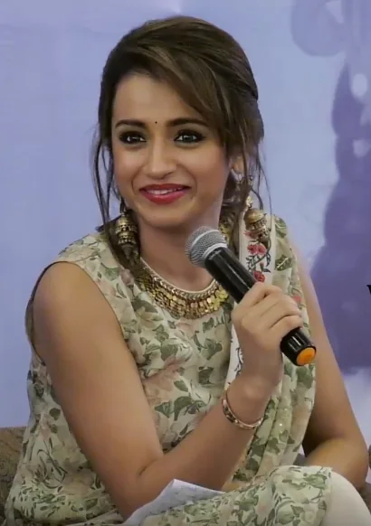 குழந்தைகள் தின நிகழ்வில் screen |
InandoutCinema | CC BY 3.0 | Commons |
|
விருது விழா அறிவிப்பில்
screen
|
Abhinaya TV | CC BY 3.0 | Commons |
|
'96 பட விழாவில்
screen
|
Abhinaya TV | CC BY 3.0 | Commons |
|
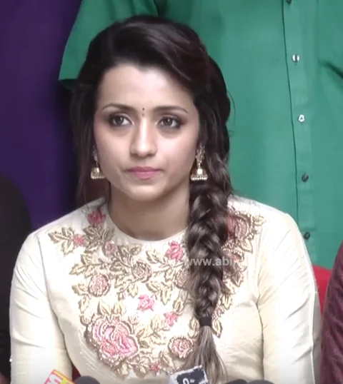 '96 பட வெளியீட்டில் screen |
Anhinaya tv | CC BY 3.0 | Commons |
|
பரதநாட்டியம்
culture
|
Vijay Sundararaman Iyer | CC BY-SA 4.0 | Commons |
|
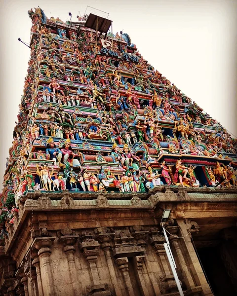 கபாலீஸ்வரர் கோயில், சென்னை culture |
Thilip thiru | CC BY-SA 4.0 | Commons |
|
பொங்கல் விழாவில் நடனம்
culture
|
Matthew T Rader | CC BY-SA 4.0 | Commons |
|
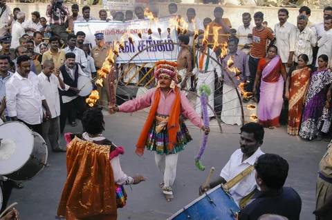 பொங்கல் தீ நடனம் culture |
Matthew T Rader | CC BY-SA 4.0 | Commons |
|
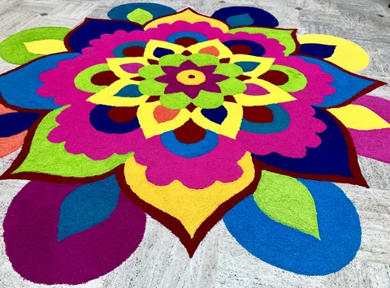 பொங்கல் கோலம் culture |
Jason Chung | CC BY 2.0 | Commons |
|
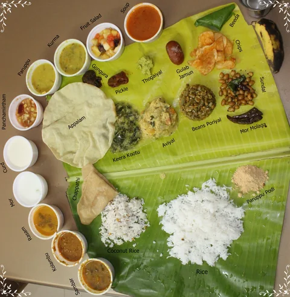 வாழை இலையில் தமிழ் உணவு culture |
KARTY JazZ | CC BY-SA 4.0 | Commons |
|
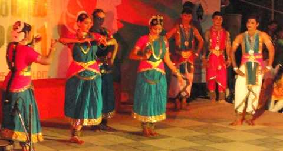 சென்னை சங்கமம் நடன நாடகம் culture |
B Balaji | CC BY-SA 2.0 | Commons |
 மெரினா கடற்கரை, சென்னை
community
மெரினா கடற்கரை, சென்னை
community
|
Dey.sandip | CC BY-SA 4.0 | Commons |
|
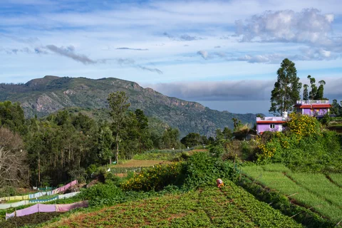 நீலகிரி வயல்கள் culture |
Timothy A. Gonsalves | CC BY-SA 4.0 | Commons |
|
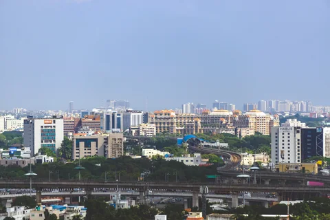 சென்னை நகரக் காட்சி community |
Karthikeyan321 | CC BY 4.0 | Commons |
|
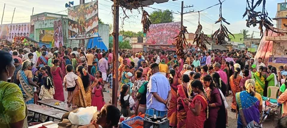 தமிழ்நாடு கோயில் விழா கூட்டம் culture |
Sanjana Krishnamoorthy | CC BY 4.0 | Commons |
|
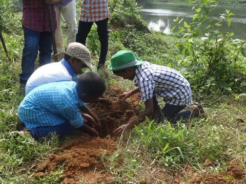 மரம் நடும் குழந்தைகள் community |
Zabna | CC BY-SA 4.0 | Commons |
 பள்ளி மாணவர்களுக்கு உதவி
community
பள்ளி மாணவர்களுக்கு உதவி
community
|
Vinod Kumar (Educator) | CC BY-SA 4.0 | Commons |
|
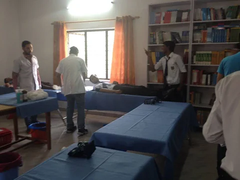 இரத்த தான முகாம் community |
PriyankaBerry18 | CC BY-SA 4.0 | Commons |
CC BY மற்றும் CC BY-SA உரிமங்கள் படைப்பாளரைக் குறிப்பிட வேண்டும்; மாற்றப்பட்ட படங்கள் அதே உரிமத்தின் கீழ் பகிரப்பட வேண்டும்.
சின்னம்
தற்போதைய சின்னம் தள அடையாளத்திற்காக வடிவமைக்கப்பட்டு, தமிழ் + ஆங்கில வார்த்தை முத்திரையுடன் பயன்படுத்தப்படுகிறது.
எழுத்துருக்கள்
Noto Sans Tamil, Noto Serif Tamil, Playfair Display மற்றும் Inter — Google Fonts வழியாக, SIL Open Font License.
சின்னங்கள் & கட்டமைப்பு
Lucide icons (ISC License), Tailwind CSS (MIT License).
பட மாற்றங்கள்
படங்கள் அளவு குறைக்கப்பட்டு, தேவையான இடங்களில் வெட்டப்பட்டு, WebP வடிவில் சேமிக்கப்பட்டுள்ளன. வேறு எந்த மாற்றமும் செய்யப்படவில்லை.
ஒரு படம் பற்றி கேள்வியா?
உரிமை அல்லது படைப்பாளர் விவரங்கள் குறித்த கேள்விகளுக்கு எங்களைத் தொடர்பு கொள்ளுங்கள்.